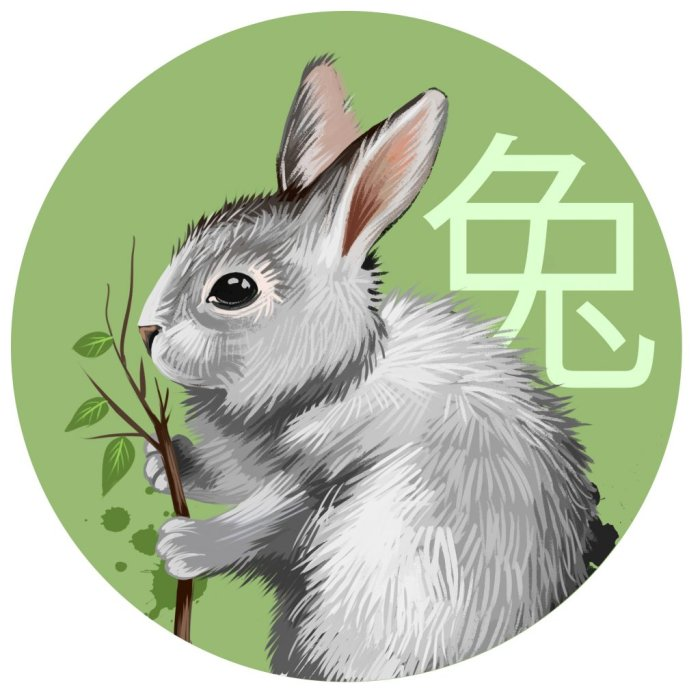

Happy
New Year
С Новым годом! Волшебства,
Смеха, счастья и тепла,
Мира, радостей, достатка
И во всех делах порядка!
Пусть все серое, плохое
Старый год возьмет с собою.
Впредь лишь светлые мгновенья
Создают пусть настроенье!
Read More

Символ года
Грядущий год считают одним из самых счастливых. Потрясений он не сулит. Напротив, жизнь будет
размеренной и спокойной.
Что еще важно знать о главном символе 2023 года — Черном Водяном Кролике (Коте)
По мнению астрологов, 2023-й будет очень счастливым! А всё потому, что он станет четвёртым, -
замыкающим годом Лунного
цикла. Ну а для того, чтобы Кролик был к нам максимально благосклонен, давайте узнаем, как лучше
украсить дом накануне
торжества, какие блюда поставить на праздничный стол и что дарить близким.
Чтобы спрогнозировать, каким будет предстоящий год, давайте задумаемся о том, каким животным
является Кролик. Это очень
милое и трогательное существо, нежный и ласковый зверёк, который всегда очень заботлив по отношению
к своей семье.
Впрочем, несмотря на очаровательный облик, сильному характеру Кролика легко можно позавидовать. Этот
зверёк очень смелый
и решительный, что, несомненно, будет сказываться на наших мыслях и поступках в 2023 году.
Новогоднии поздравления
В Новый Год желаю здоровья и тепла,
Любви, романтики чуть-чуть,
Чтобы жизнь счастливая была,
Чтобы все сложилось – в этом суть!
Пусть в Вашем доме будет всё -
Любовь, Покой, Уют, Богатство,
Пусть будет в нём всегда тепло,
Чтобы хотелось возвращаться!
Пусть старый год заберет все печали,
А Новый — радость принесет!
Любовь, достаток, и в делах — удачу,
А счастье само к вам в гости придет!
Пусть надежды тебя осыпают,
И мечты сбываются твои!
С Новым Годом тебя поздравляю,
Годом счастья, добра и любви!